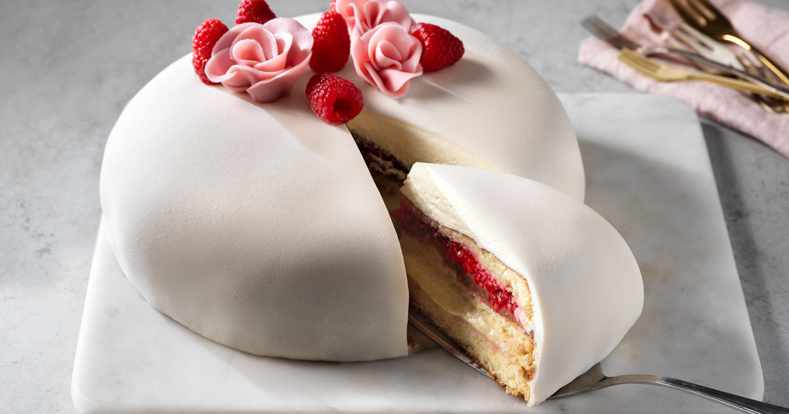

<--Tillbaka
Recept Tårta
Tårta gott, baka.

Ingredienser:
- Mjöl
- Socker
- Ägg
- Smör
- Grädde
- Jordgubbar
Steg:
- Sätt ugnen på 175°C.
- Vispa ägg och socker pösigt.
- Blanda mjöl och bakpulver, vänd ner i smeten.
- Smält smöret och rör ner tillsammans med grädde.
- Häll smeten i en smord form.
- Grädda i mitten av ugnen ca 30 minuter.
- Låt kakan svalna.
- Dela kakan i två bottnar.
- Bred grädde och skivade jordgubbar mellan lagren.
- Toppa med mer grädde och jordgubbar.
| Ingridiens |
Kalorier |
| Mjöl |
120 |
| Socker |
200 |
| Ägg |
70 |
| Smör |
150 |
| Grädde |
100 |
| Jordgubbar |
30 |
Lämna en kommentar: